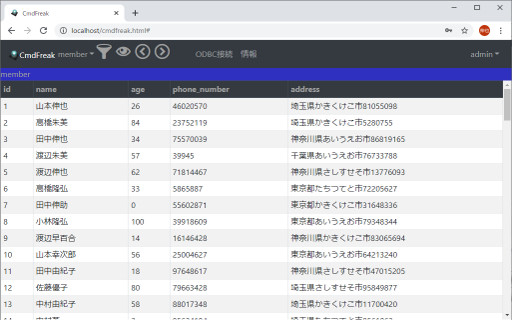

CmdFreak概要
情報システムやアプリケーションソフトウェアの多くは，それらが持つデータの永続化機構としてRDBMS(リレーショナルデータベース管理システム) を用いており，
RDBMSの利用範囲は今後も拡大する傾向にあります。
RDBMSは情報システムやアプリケーションソフトウェアのバックグラウンドサービスとして利用されるケースがほとんどですが， データマイニングや業務・運用の迅速化
を目的として直接RDBMSのオリジナルデータを参照するケースがあります。
また，RDBMSはアプリケーションソフトウェアの特徴に応じて選定されるため，業務・運用
の中で異なる複数のRDBMSを利用することは一般的なこととなっています。このため，複数のRDBMSを使い分けるユーザーにとって次の問題が存在していました。
- RDBMSの種類に応じて異なるデータ参照ツールを利用する必要があり，そのツールの学習コストが増大する。
- 各クライアントに複数のデータ参照ツールをインストールする必要があり，クライアント数に比例して導入コストが増大する。
CmdFreakは，リレーショナルデータベース・ビュアー(データ参照ソフトウェア)であり，上記の問題に対して次のソリューションを提供します。
- フリーのメジャーRDBMSである，MySQL, PostgreSQL, MariaDBをサポートし， これらのRDBMSに対する共通のユーザーインターフェースを介してデータの参照が可能となり
ます。 RDBMSの種類に応じて異なるツールの操作を学ぶ必要がなく学習コストを抑えることができます。
- クライアント側の導入コストが実質的にゼロとなるWebアプリケーションとして動作します。 加えてWebサーバを同梱するオールインワン型のインストーラにより， 通常
のWebアプリケーションのように，事前にWebサーバやスクリプト言語を設定しておく必要はありません。 導入に関わるコストを抑えることができます。
CmdFreakはデータベースを参照するための下記の機能を提供します。
- レコード一覧の表示／ページング
- テーブルの選択
- テーブル情報の参照
- カラムのフィルタリング／ソーティング
- DBMSの選択

システム要件
CmdFreakは以下の環境で動作します。
- 動作に必要なCPU: 2GHz以上のクロック周波数で動作するCPU
- 導入に必要な空きディスク容量: 20MBytes以上
- サポートするオペレーティングシステム／エディション:
Windows 10
Windows Server 2016
Windows Server 2019
- サポートするWebブラウザ:
Microsoft Internet Explorer 11
Microsoft Edge
Google Chrome
Mozilla Firefox
- サポートするDBMS:
MySQL 5.7 (+ ODBC Driver: MySQL Connector/ODBC 5.3)
MySQL 8.0 (+ ODBC Driver: MySQL Connector/ODBC 8.0)
MariaDB 10.3 (+ ODBC Driver: MariaDB Connector/ODBC 3.0)
MariaDB 10.4 (+ ODBC Driver: MariaDB Connector/ODBC 3.1)
PostgreSQL 9.6 (+ ODBC Driver: psqlODBC 9.6)
PostgreSQL 12.2 (+ ODBC Driver: psqlODBC 12.1)
変更履歴
バージョン 1.1.0 ---> 1.2.0
- GUIにスマートフォンでも見やすいレスポンシブデザインを採用しました。
- ユーザー管理機能を追加しました。
バージョン 1.0.0 ---> 1.1.0
- 表示可能なレコード数が無制限になりました。
- 複数ユーザーからの同時操作時の処理性能を改善しました。
ダウンロード
1.2.0 Release: 2020/04/22
1.1.0 Release: 2018/01/28